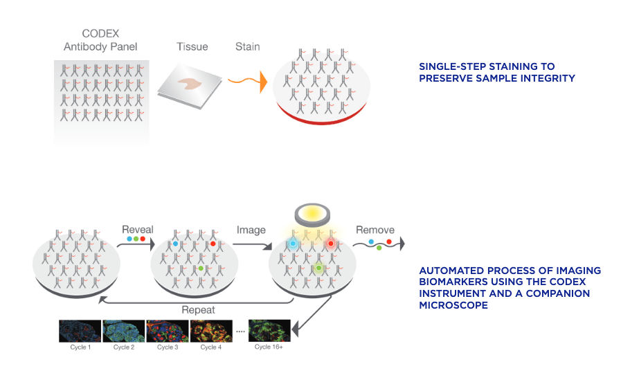

More data, more problems: Perspectives on challenges in large-scale, high-complexity bioimage analysis
Advances in high-parameter imaging technologies over the past several decades created an exponential increase in the complexity of imaging datasets. In this article, we’ll cover: in situ imaging technologies, deep learning for image analysis, and unmet challenges bioimaging dataset analysis.

Poke around a lab or wander through a research building and chances are you’ll find at least one microscope buried away in a dark, windowless room. This humble and omnipresent tool has been around for over 500 years—ever since the earliest known microscope constructed by a father-and-son team of Dutch eyeglass-makers hit the scene—but as with other technologies the past several decades have ushered in an exponential increase in the complexity and size of imaging datasets.
In this article, we’ll cover:
- - In situ imaging technologies
- - Deep learning for image analysis
- - Unmet challenges in high-complexity imaging dataset analysis
The current state of in situ imaging technologies
Immunofluorescence
Multiple techniques for multiparameter imaging of fixed cellular or tissue samples are available today, and most are based on the principle of antibody-antigen binding. In its most basic form, immunofluorescence (IF) microscopy, the scientist starts with fixed and permeabilized tissue samples and treats with primary antibodies specific to a certain marker protein of interest. If the primary antibody is attached to a fluorophore, this is direct IF. If not, then a secondary fluorophore-labeled antibody is applied to label each unique primary with a different fluorophore, and we’re dealing with indirect IF. The upper limit of unique markers imaged is dependent on how many fluorophores can be optically separated (i.e. how many fluorescent channels your microscopy has)—at the most basic level, this is typically 4 channels, but advances in cyclic staining make it possible to perform repeat staining rounds and overcome channel limitations. CyCIF, a technique in which fluorophores are chemically inactivated after each round of imaging, is one such cyclic staining approach. Using a fluorescent microscope (or confocal, or two-photon, or spinning-disk if you’re fancy), the emission from each marker antibody pair is captured, and can be quantified using one of the many software tools on the market.
Principles underlying immunofluorescence (IF) microscopy: in direct IF, an antibody conjugated to a fluorophore which is specific epitope to an epitope of interest is used. In indirect IF, a primary-secondary antibody pair is used, where the secondary is fluorophore-labeled. Image from this website.
In situ hybridization
A related technology for imaging nucleic acids, in situ hybridization, works on the same principles but switches out antibodies for complementary oligonucleotide sequences with chromogenic (i.e. color-generating, can be seen by standard light microscopy) or fluorescent amplifiers which are specific to the mRNA/DNA/oligo you’re trying to image. RNAscope and BaseScope, from Advanced Cell Diagnostics, are popular commercial kits available for this technique. Nanostring, an emerging competitor in this field, allows users of their platform to “stain” for both RNA (using complementary probes) and protein (using targeting antibodies) on the same sample, collecting both transcriptomic and proteomic in situ data. Other approaches have focused on driving forward massively multiplexed probe technology to allow in situ detection of thousands of unique molecular species—take a look at MERFISH and SeqFish for more details.
CODEX and MIBI
Both CODEX (Co-Detection by indEXing) and MIBI (Multiplexed Ion Beam Imaging) riff off the basic antibody-antigen principle—in CODEX, fixed tissue samples are stained just once (unlike the multiple staining rounds of cyclic IF) with a large panel of DNA-barcoded antibodies, and cyclically imaged. Currently, the maximum number of imaged markers is capped by the number of validated antibodies available—most users image around 60 parameters depending on the application and tissue type. CODEX can be combined with more traditional pathology/histology staining techniques to collect multiple layers of information about a given sample. On the other hand, MIBI labels fixed samples with metal-conjugated antibodies, which are detected using time-of-flight secondary mass spectrometry. In brief, the labeled sample is scanned with an ion beam, ionizing the metal conjugates and generating mass spectra which are then deconvoluted to generate an image of the sample with protein expression data overlaid. MIBI has an upper limit of about 40 parameters, based on the number of available unique metals to conjugate onto validated antibodies.
CODEX workflow: A given tissue section is stained with a panel of validated DNA-barcoded antibodies, then cyclically imaged and stripped to generate a high-parameter image of the stained tissue. Image from this website.
MIBI workflow: A given tissue section is labeled with a panel of metal-conjugated antibodies, then scanned with an ion beam to ionized the metal conjugates and generate mass spectra. Spectra are then deconvoluted to generate an image of the sample with protein expression data overlaid. Image from .this website.
Both of these approaches currently require relatively specialized, costly instruments and are limited to the labs and core facilities that have invested in the machinery and expertise to work with these techniques. However, the datasets that come out of large CODEX or MIBI experiments are pushing the boundaries of currently available imaging analysis approaches and driving labs and commercial entities to develop new AI-based methods of looking at this type of high-parameter in situ spatial data, as we’ll discuss below.
Imaging mass spectrometry (IMS)
This technology is significantly different than those discussed above in that no antibodies or specific binding chemistries are used for marker detection. Rather, IMS (also called mass spectrometry imaging, or MSI) is based on the same idea as MIBI—detection of ionized particles through mass spectrometry—without the need to label the specimen in any way. Instead, a laser ionizes the molecules on the surface of a sample directly and collects a pixel-by-pixel map of mass spectra. Substantial computational post-acquisition processing is then needed to convert this map of m/z values into abundances and spatial distributions of known molecules. This can be done by matching against a database of known molecules and their mass spectra, but gets more complicated with unknown molecules. The major advantages of this approach include the ability to image without needing specific antibodies, reagents, or knowledge of sample composition, which make it highly appealing for discovery applications.
Refinements of the major imaging modalities described above, and entirely new methods that combine imaging with sequencing and other -omics technologies are coming out every year, but let’s stop here for now and think about the challenges common to all imaging experiments and approaches.
Dealing with the problem of scale: deep learning for image analysis
The basic questions we might ask of an image have not changed as dramatically as the technologies we use to obtain those images. Typically, we might want to know things along the lines of:
- - How do we define a cell? Where are its boundaries? How do we delineate cells in close contact?
- - What type of cell is this?
- - Does it express marker X?
- - How much of marker X does it express?
In general, image analysis goals can be divided into a few categories which encompass all the questions above:
- - object detection/tracking
- - segmentation: defining borders between biologically relevant objects (cells, tissue structures, etc)
- - quantification: self-evident—assigning quantitative values to marker abundances
- - classification: labeling imaged objects such as cell types, stages of an embryo, etc
- - mathematical or statistical modeling
Common image analysis goals. Figure adapted from this article.
All of these goals can be achieved through manual annotation—the experimenter can go through each image and determine what constitutes a cell, use a software program to quantify expression of X in the cell, and determine what type of cell it is based on expression of X. Obviously, as datasets get larger and more complex, this is no longer feasible. In recent years, deep learning—a type of machine learning that uses artificial neural networks (ANNs)--has come to dominate new analysis approaches to biological imaging. Deep learning has been applied to all of the above tasks, as well as image processing/pre-processing applications—see here for a detailed review of recent articles on deep learning for image analysis. Most biologists have at least heard about machine learning, and we’re not going to go into the technical details here (see this article or this one for more info). Below, we’ll focus on discussing the challenges associated with deep learning-assisted image analysis and the remaining gaps and unmet needs in the bioimaging field.
Challenges in AI-assisted approaches to bioimage analysis
As you’d expect with any novel cutting-edge approach, several drawbacks of deep learning as a tool for bioimage analysis have been identified in the literature. A selection of these include:
- - Insufficient training data: the success/performance of an ANN is dependent on the quality and size of the dataset it is trained on, in order to avoid overfitting and non-reproducibility. Various data transformations such as rotations, translations, color modifications, etc can be used to expand the training set.
- - Quality of training data: often, deep learning networks are trained on manually annotated data. For example, in order to generate a training set, a human might identify all the cells of a certain type. As you’d expect, the quality of these manual annotations is critical for training a model with reliable, objective output on a new dataset, and avoiding encoded biases from the human observer. This paper is a great reference for exploring this issue further.
- - Interpretability: a frequent criticism from end users of deep learning methods is their “black box” nature—it can be very difficult to determine what decision-making is taking place and what features its decisions are based on. The broader acceptance of deep learning approaches in clinical and medical contexts hinges to some extent on this criterion, making the interpretability challenge a major focus of the bioimaging deep learning field.
- Despite these challenges, the advantages of a well-trained deep learning network are obvious: as compared to having a human sit and score images, artificial intelligence-based analysis approaches can increase the speed, accuracy, consistency, and objectivity of the resulting dataset.
Unmet challenges in high-complexity imaging dataset analysis
As with any new, computationally intensive field (think single-cell RNAseq about 15 years ago), high-complexity image analysis is still experiencing growing pains. Heterogeneity of analyses and reproducibility remains a major obstacle to both wider adoption of these new-generation imaging modalities and moving the biological insights that result further. For example, as Bryan Cannon--a graduate student at Stanford whose research focuses on imaging human brain tissue using MIBI and working on brain-specific analysis approaches--notes, “I think academia is great at being able to toy around and train and come up with cool new things, but I also think that when it comes to being able to use those cool new things, that’s when you turn to industry. It’s the only way you can get people to use things ubiquitously, across domains, and it’s how you build confidence across the global community.” The biggest advances will likely come on the analysis side, Cannon predicts—better classification, segmentation, and quantification algorithms and improved imaging-specific ways to interrogate the underlying biology—rather than in increased imaging parameter targets or biological samples. “It takes time to consolidate technologies,” he notes, and with no dominant commercial player in the bioimaging/bioimaging informatics space at the level of Illumina for transcriptomics, it maybe be another 10 years or more before any tool or analysis is embraced by the majority.
Graham Barlow, a Stanford graduate student working on imaging type I diabetes pancreas samples using CODEX and developing new tools to examine the interactions of cell neighborhoods within tissues, expressed similar sentiments: “Improvement of the data quantification and analysis is just as important, if not more important, as improving the technology itself with more parameters or better resolution. There's so much we're missing out on in the data we've already collected.” He also brings up the issue of space, which is non-trivial for a lab in which a single imaging experiment can generates tens of terabytes of data. “It’s crippling to a lot of groups,” he says, “if they can’t pay for enough storage space to keep all their data.” Along the same lines, data sharing with collaborators can also be challenging. In the end, as Cannon notes, “we should just use whatever works”. It’ll be up to the researchers and the labs working in this space to define what form that might take in the coming years. Biodock is doing its part to make high-parameter imaging more accessible and simpler, including unlimited storage for all your giant datasets and intuitive AI-assisted segmentation and model training.